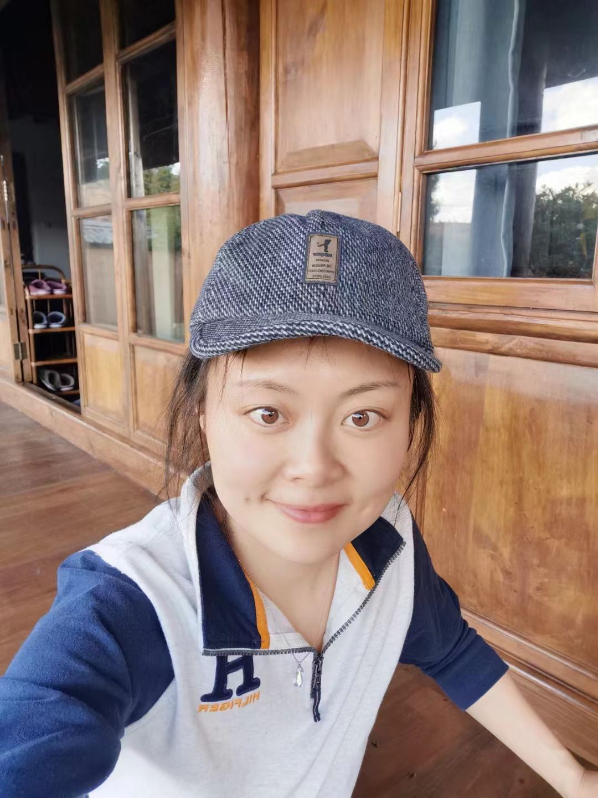
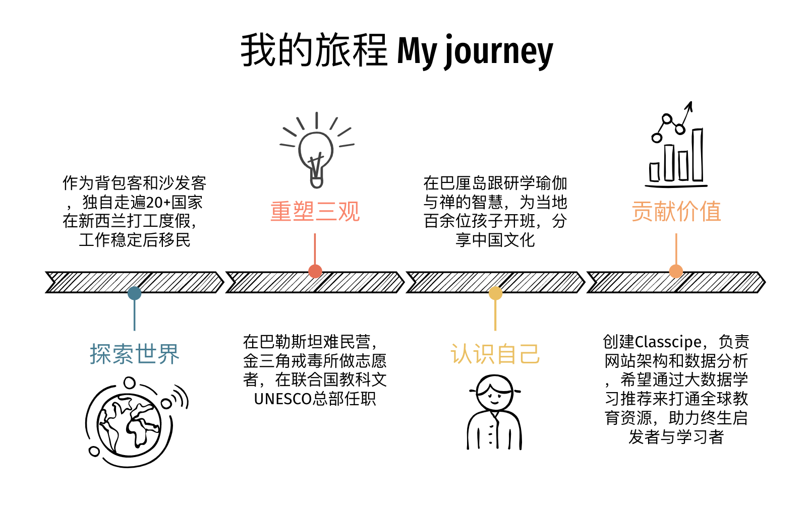
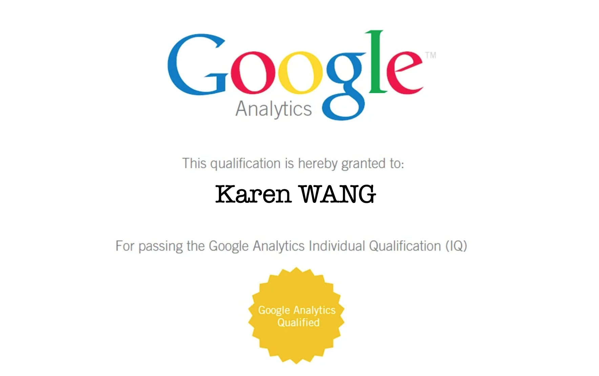
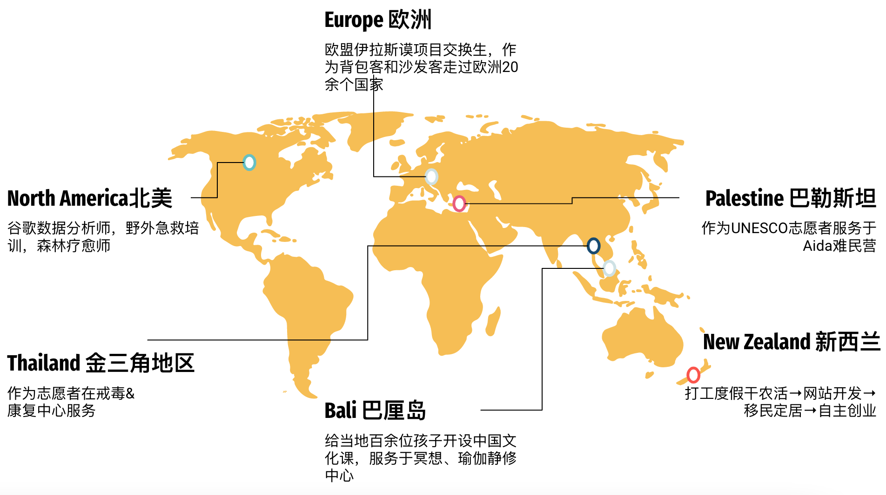
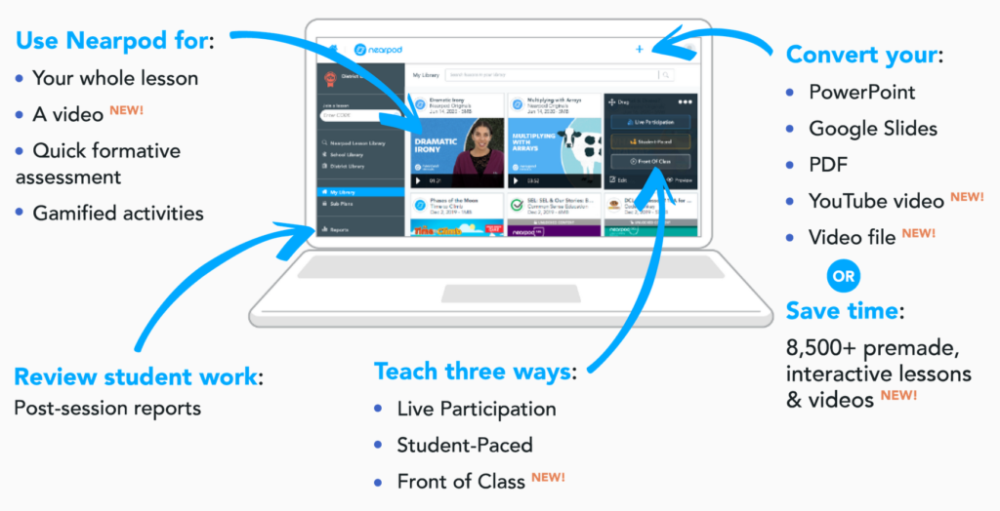
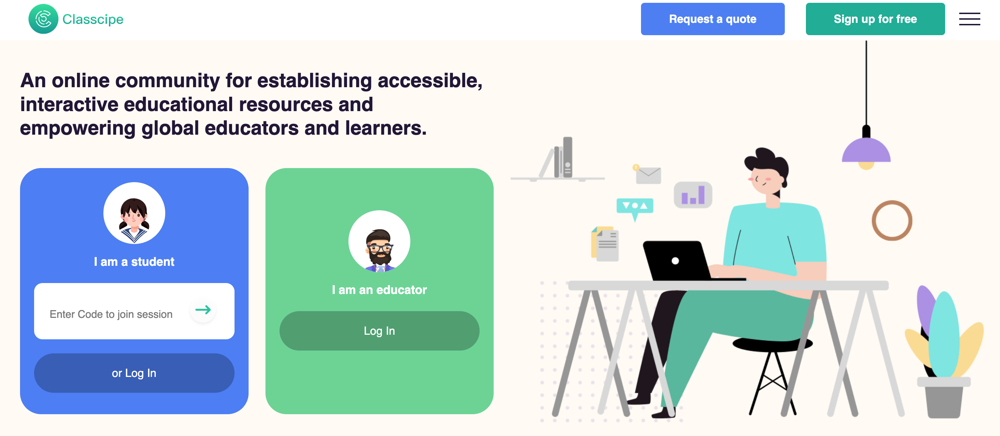
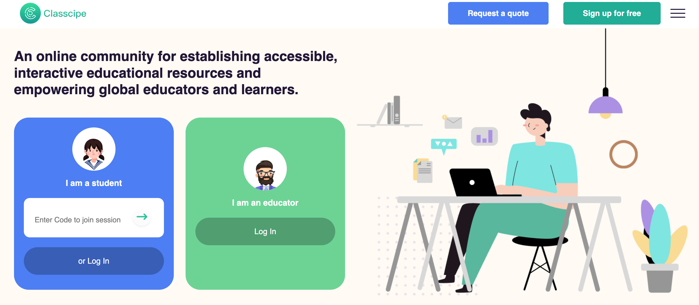
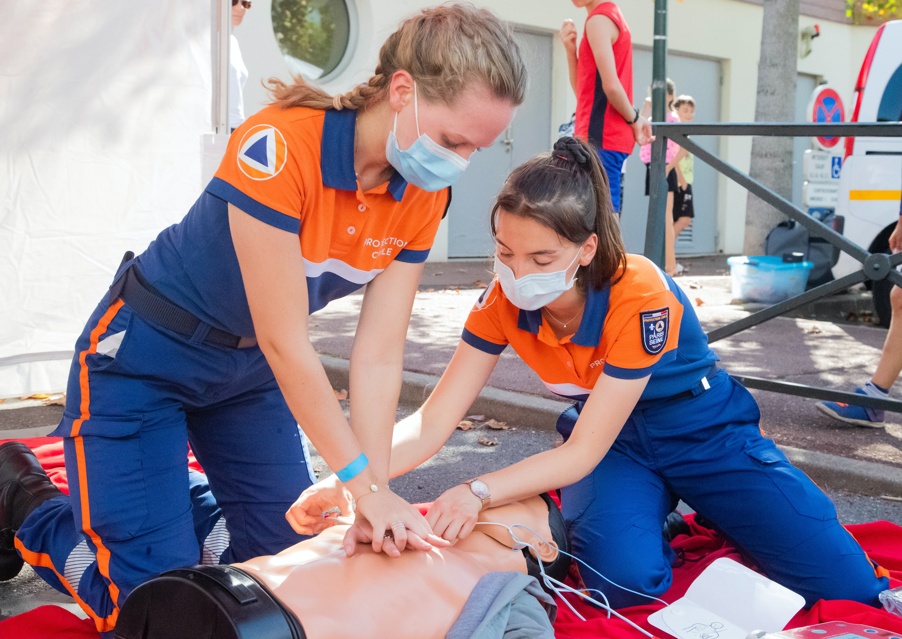
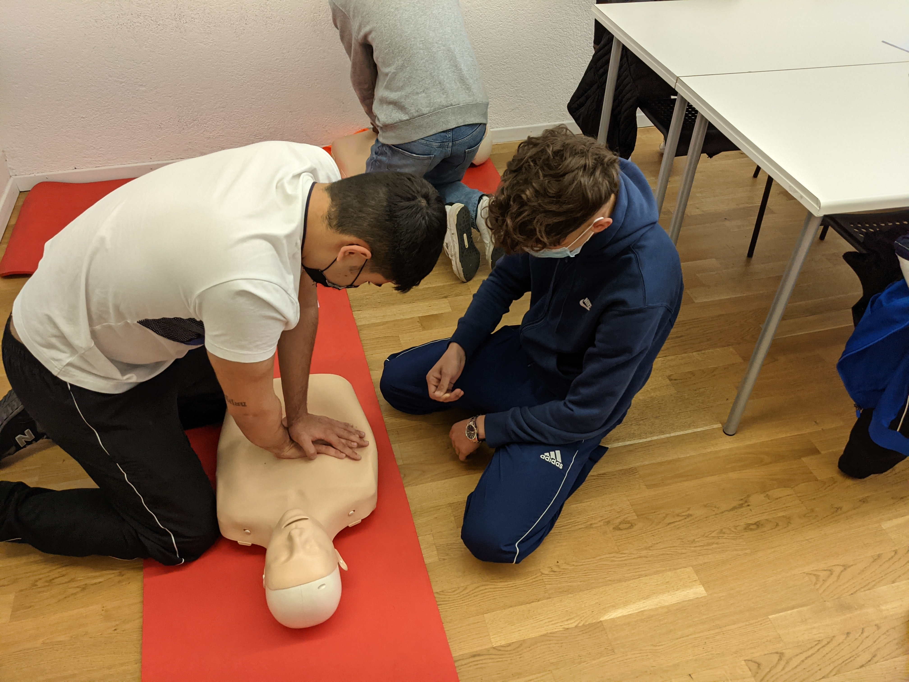
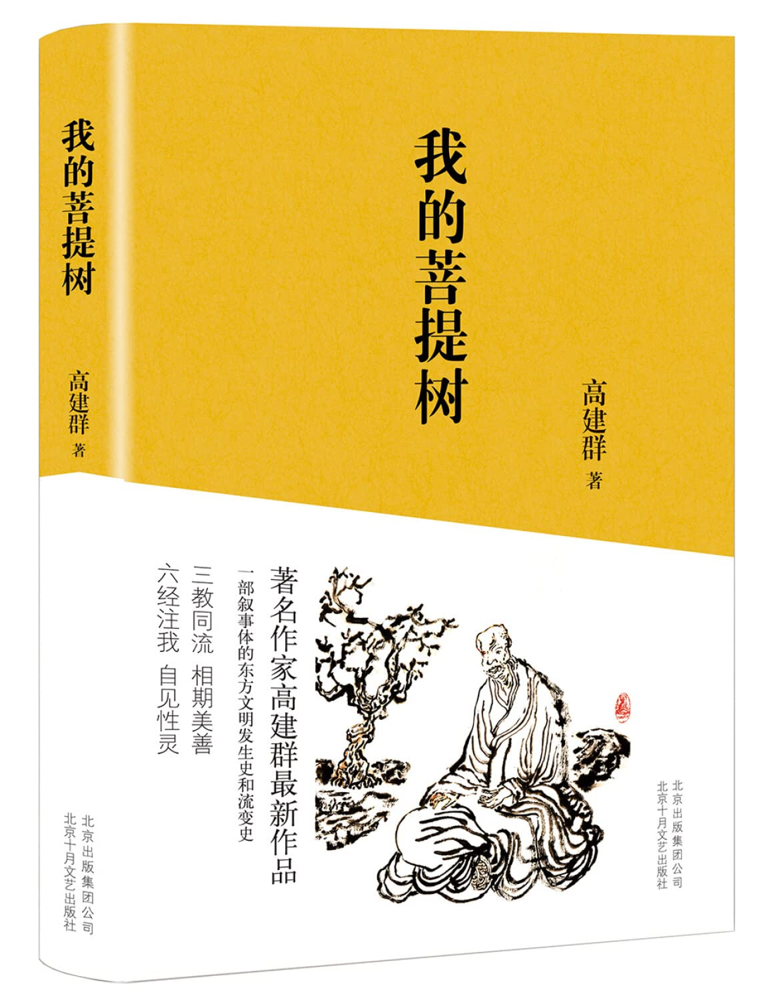

Intro 关于我

给我发邮件
我的微信
我叫小米，英文名是Karen，我是一名程序猿
开个玩笑啦，我不算是真正的程序员，写代码只占我主要工作的五分之一吧，大部分时间用来开发网络平台，包括前端的界面功能设计，数据埋点和利用R和Python进行网站的处理数据、算法调研、模型训练，设计数据算法是让我觉得最有趣的。
如果技术类的活儿提前结束，我也会花时间和各国用户沟通，听他们对功能和数据有效性的使用反馈；
具体内容可以查看
我的工作。
剩下的时间除了睡觉，我基本都用来：跟随兴奋点，发现新体验，观察与内省，探索未知的我。
我很喜欢Into the wild里Chris说的：
“对于我来说，人类灵魂的内核来自于新的经历
For me, the core of human's spirit comes from new experiences. ”
这里的经历并不是指每天都要去不一样的地方，看不一样的风景，吃不一样的食物，见到不一样的人；
是通过观察(observe)和内省(reflect)，让自己在闭眼入睡那一刻，嘴角露出一丝微笑，
因为，和今早醒来时相比，我已经不一样了。
所以我还有一些有趣的身份，比如——
野外生存技能培训师
UNESCO联合国教科文组织项目领队
森林疗愈向导
中国传统文化导师
......

我做过一些有趣的事，比如——
独自背包走过20多个国家，睡了30多个陌生人家的沙发
打工度假新西兰，自驾南北岛
在阿拉斯加学习野外生存，在大峡谷森林公园无人区徒步露营
在巴勒斯坦难民营服务了半年，在金三角山区的戒毒所做志愿者
在巴厘岛的ashram学冥想和瑜伽，开班分享中国传统文化
......
我遇到过各式各样不可思议的人们，具体可以去看 有趣的灵魂们.
我喜欢读诗写词
这首词是关于我过日子的态度
春时
微风卷云，亦拂谁面？盈盈语，酌酌饮，灯枯音续。
欲成双不入对，何求伯牙，遇子期，暖意融已。
夏夜
晓来雨过，遗踪何在？迢迢夜，亭亭月，珠帘不卷。
不如暂了烦尘，也学庄周，梦蝴蝶，栩栩然也。
秋至
朝云夜雨，翻覆何因？淡淡风，微微凉，未尝言倦。
暂且扇炉煮茗，小试新茶，看浮生，潇潇闲耳。
冬日
暮至风停，无影随行。汤汤天，皓皓雪，轻舟已遣。
若是未解世缘，何如太公，垂直钩，霍霍朗矣。
Valuable courses 有价值的课程

谷歌数据分析课程
谷歌的课程实操比各个大学教的要超前很多，比如谷歌是第一个接受用Python来做数据分析的互联网公司，这虽然让很多习惯Java的资深程序员很无奈，但毕竟是大势所趋。
而且谷歌在学习的全过程中不断抓取你的学习数据，同步分析，持续更新学习方案。真正做到了Meta，解释一下Meta：
比如，Its a joke about jokes(我开了一个关于笑话的玩笑)。这就是meta，I am learning how to learn(我在学习如何学习)，这也是meta。
扎克伯格把公司名称改成Metaverse，我们翻译为元宇宙。
元，这个字，你可以从很多角度理解。但如果扎克伯格和我一样赞同“黑客帝国”里说的“母体世界”概念，或是佛家所说的“大千世界不过是幻象”，亦或者庄子口中的“不知是我梦蝶还是蝶梦庄子”；都是主体意识到了存在源自本身，我们所做的事情和所感知到的世界，是本我意识的一小部分。
那么扎克伯格的野心可就大了，在这个他构建的宇宙里，人们能够意识到meta的存在。就如同Morpheus(黑客帝国里的黑人大哥)对Neo说选择他的原因之一，就是Neo在当时，1998年的互联网世界里就已经以黑客的身份活得很潇洒了，这个黑客的身份在真实世界并不存在，但这不影响
Neo对他在虚拟世界身份的认同，他甚至觉得在代码中活着的他更加真实。“当虚拟世界可以逼真到让我们无法分别真假，我们便会接受，或者愿意去思考-‘所谓真实世界也许也是一个假象’的理论”。
回到谷歌课程，就是你在学习数据分析，但在学习的过程中你不断产生数据，谷歌认为，你先把你的学习数据分析透彻了，明白你的行为是如何产生和使用数据的，你就掌握数据分析的精髓了。
好了，不展开说了，反正扎克伯格到底是野心家，还是喜欢哲学的文艺小青年，见仁见智咯。
机器学习课程
很多人听名字会觉得这类课程会很枯燥？其实no,no,no，有意思得很。为什么呢？
因为你学完，就会发现自己每天很多时候活得像个机器，你可能想说，我怎么会像机器呢？我有血有肉，感情丰富呀。
简单解释一下：早晨起来，开始机械性地重复你所熟悉（运行脑中程序及身体肌肉记忆）的行为，你在吃早饭时在脑中进行数据分析来判断营养价值，热量，调取记忆数据进行对比来评价食物的味道，性价比和你的烹饪水平；
你在打开衣柜时，通过分析天气，场合，色彩搭配等知识数据来选择穿什么，然后你去上班......
你看，我们是优秀的学习机器，但如果想让你的每一刻都充满新鲜感，就要先意识到（meta）我在机械性地分析数据来指导我的行为，然后退出程序，你当下的这一刻就发生一个转变。
Your senses stop being the projector of your mind, they start to create new experience for you.
你的感官不再是大脑的投影，它们开始为你真正获取新的体验。
哈哈，我导师要是听到我这么讲机器学习不知会是泪流满面还是拍案而起，但我还是要提一下传统的机器学习知识主要为
回归，分类，深度学习以及推荐系统，聚类和检索，推荐系统和降维（对了，你要是喜欢看三体，听到“降维打击”这个词有种直击心灵的震撼，那这里有一堂课可以满足你的全部好奇心）；最后就是应用深度学习创建智能运用。
急救技能培训(包括心肺复苏)
尊重生命的人都应该去学习，这不是用来赚钱的，不是用来炫耀的，只是因为有一天，你可能会拯救自己或者别人的生命。
野外生存技能培训
我的急救证是在阿拉斯加完成学习的，对，你没听错，那个天寒地冻鸟不生蛋的地方，接受培训的那段时间里，我一直考虑的问题是：
人类在自然面前真的如此渺小吗？
大自然真的那么残忍，总是剥夺我们生存下去权利吗？
还真不是
野外生存，什么技能都是次要的，首先要植入的信念是：你比你想的更有能力生存下去；
自然，它不是你的敌人，并不是等着摧毁你，吞没你，让你显得渺小和无助；
它一直在提供你活下去的资源和工具，鼓励你抓住每个生存下去的机会；
它希望你赶紧镇静下来，观察周围，发现那些它给你的提示，它多希望你能允许它来帮你呀。
讲到这，我常常会很痛心，因为野外急救队经常在找到遇难者时，发现能够帮他们，能救他们的资源就在四周，甚至在他们眼前。但他们却在生命的最后一刻惊恐、无助地把大自然视作吞没他们的洪水猛兽。
所以，如果你喜欢登山，徒步，走进户外，请抽空去学习一下这门课程吧。
标记一下去过的地方

My work 我的工作
Online platforms 搭建网络平台
具体的项目可以直接看网站内容： Classcipe 和 Nearpod
其中Nearpod为已成熟平台

 Classcipe还在构建中

二者都应用了强化学习算法，也可以理解成有监督学习算法与最优化决策算法的组合也就是智能体根据其对当前环境下长期最大收益进行决策（最优化），而这个收益的函数是需要通过大量样本统计（有监督学习）才能得到，并且智能体的当下决策往往影响周围的环境状态进而进一步影响下一步自身的决策。
其典型应用场景是基于用户实时行为的个性化推荐与搜索。
Classcipe还在构建中

二者都应用了强化学习算法，也可以理解成有监督学习算法与最优化决策算法的组合也就是智能体根据其对当前环境下长期最大收益进行决策（最优化），而这个收益的函数是需要通过大量样本统计（有监督学习）才能得到，并且智能体的当下决策往往影响周围的环境状态进而进一步影响下一步自身的决策。
其典型应用场景是基于用户实时行为的个性化推荐与搜索。
解释一下自己的劣势和优势
劣势：目前我参与的所有平台的算法项目都是基于单智能体的，没有涉及到多个智能体的优化策略，因而可以产生价值的应用场景受限，还没有时间和精力去深入研究，但对多个智能体的最优化需用到的博弈论还是很感兴趣的，过段时间准备专心研究一下。
优势：我可以将教育专业背景和数据算法功能自由结合
在未来，所有互联网平台的核心都是数据，数据，数据.
UI可以互抄把用户体验到极致，但用户从平台上获取的信息，就是data，是给用户带来的价值，当然，越有价值，用户就会待的越久，越愿意消费。
我的教育专业背景给了我在知识/技能数据传播领域的洞见，也就是上图所示的，人类接受新知识或技能一般会经历6个阶段，记忆→理解→应用→分析→评估→创造，目前在网络世界里
共享的学习资源以记忆为主，即我们所说的“干货”，部分涉及到理解，即“有深度的内容”，但细想一下就会发现：我所记住和理解的内容，是否会进入应用阶段，全凭我的自觉，
如果能动性高的话，我会在使用中验证，在应用中我可能会得出两个结论：有用或者无用；这其实已经进入分析和评估阶段了，在这两个阶段，如果我学过数据分析并有足够的辩证
思维能力的话，我会在归纳总结出适用于自身的、个性化的知识或技能来，这就是创造了。
恭喜你，完成了这6个阶段后，那最初的知识与技能已经被你赋予了新的意义，你的创造产出了新的价值。
我相信自己所设计的算法推荐逻辑，能够帮助每个平台用户突破教育中记忆与理解的桎梏，面对每个新知识或技能，高效率地走完有趣且不可思议的学习旅程。
First Aid Training 急救培训


业余时间在美国和新西兰参与过1.5年的野外生存急救培训，但因为时间和疫情原因，暂停了。
在国内进行了一些调研，以朋友家人为主（抱歉这个数据样本是有偏差的），结果让我有些吃惊，能够讲清楚心肺复苏流程及手法的受调者少得可怜。
目前在和WildMed的培训师沟通，希望拍摄一套心肺复苏及AED的培训视频，核心是把内容安排得有趣些，在理解为什么的基础上进行应用演练，
明白了“why”，“what和how”就自然心中有数了，否则单凭记忆完成考核水分实在太大。
AED(自动体外除颤器)，用法不需要培训，因为打开包装盒子里面写得很清楚，培训过到现场反而容易一紧张记不清了。
AED目前咱们国家在机场，火车站，地铁站，大商场等公共场所都有设置，但在我的调研中，留意到AED位置的人，居然没有。
有时我想，在社区、学校等地方的宣传，可能比不上在某个贺岁片里安排“一个使用CPR或者AED帮助患者恢复心跳的场景”，也许就人人皆知了。
这一点上，美国比我们做得好。很多电影电视剧里，都穿插了相对精准的抢救画面，包括手法，次数，位置等；
比如洛杉矶大地震和怪奇物语
最后啰嗦一句，如果你是在大型公共场所实施救助，请在为患者做心肺复苏CPR的同时，安排另一位成人去找AED，在除颤仪被交到你手里之前，
切记，心肺复苏不能停！
Translation 翻译工作

《我的菩提树》是父亲朋友高叔叔的众多作品里，我个人最欣赏的一本。他用108个故事将华夏五千多年的文化和历史串成了一串念珠。
让每个读过的中国人，在生命任意时刻的思考中可以自由捻起某颗珠子，细细体味那珠子，里面蕴藏着祖辈的审时度势、荣辱兴衰、家国大义、经典覆辙，当然也有悲欢离合，
来指导在历史洪流的此处漂流着的我们，做出相对睿智的决断，悟出相对合时宜的智慧。
我的目标是将此书译成英文，现正在点滴推进中。
那些改变我的，有趣的灵魂们
毛利小哥：被苹果砸了脑袋
在双脚落地中土世界时，我真真切切体会到了命运走向由自己选择时那种飒爽的感觉，过去的半年里，我经历了
进入世界五百强总部
刚就职就能坐着头等舱去各地出差
被集团总部伯乐相中，作为管培生轮岗为提拔做准备
第一次职业滑铁卢：成为提调候选5人中唯一的淘汰者
层层追溯终看到领导批示：高层岗位不适合女性
申请打工度假签证，辞职退房打包买票
飞机在太平洋上空时，我还在想：我毕业后的第一份工作，我是抱着要为它鞠躬尽瘁的理想入职的，没想到头来被公司”重男轻女“的文化伤了元气。既然领导认为有些重要的岗位不适合女性，那么你来我往，将心比心，我这重要的青春也就不太适合奉献给这家企业了。
我花了大约1000纽币，折合5000人民币买了一辆二手车，这可能是我人生中第一辆，也是最后一辆，比我年纪还大的车了。它带我走遍了新西兰的南北岛，大大小小的农场。
我在葡萄园绑过枝，在酒厂的地窖里呆太久闻都闻醉了；在猕猴桃园里摘果子，每天吃猕猴桃吃到人都变绿了；在奶牛场每天5点起床挤牛奶，再盼着恒天然集团的奶罐车来收牛奶后手工；在牧场协助农场主剪羊毛，每天蹭上的绵羊油能装几罐护肤品。
我就这样面朝大海，春暖花开地干了几个月的体力活，直到我最后一份工作。那是一个苹果园，我被安排和当地一位毛利小伙子搭档，摘苹果装篮。
忙了一整天，也没怎么说上话，他都在默默干重活累活。傍晚，夕阳西下，手工前我对他说了声: 和你搭档很开心，伙伴。(I enjoyed working with you, mate.)
他有些吃惊地看着我，问:所以你会说英语？（So you speak English?）
有点尴尬，好像我确实还没跟他说过话。赶紧化解一下: 是啊，抱歉今天我有点沉默。Sure, sorry that I didnt talk much today.
他好像并不在意这个，而是看着我的眼睛，继续追问：你为什么会说英语？How come you speak English?
这个嘛，我们从小学到大学都得学英语的。Well, I've learnt English all the way from Primary school to University.
他把手里的篮子放在地上，很严肃地走到我面前，问:你上过大学? 那你毕业了吗？You went to Uni? so did you graduate?
呃，我算是毕业了吧。
他这样一问，我倒是不敢说了。
只见他身子往前一倾，整个人挡住了我的阳光，我看着他不可思议的表情，听到了下面的话。
你是不是脑子有病啊？你从大学毕业了，会说两种语言，你跑来农场干活，和我抢饭碗？What is wrong with you? You get a Uni degree and you speak two languages, yet, you are here, working on a farm, try to steal my job?
我一时语塞，面对他一连串的质问，唯一能做的，就是向后退了一步。
也许是感觉到了我的吃惊，他舒缓了一下语气，解释说: 你看，我中学就辍学了，我没有选择，只能在这里打工，但你有的。Look, I dropped off from High school, I dont have a choice but working here. But you have.
我还想为自己辩解，他接着说：我明白你来这里打工度假，体验生活，但是这样的生活，你还要体验多久呢？也许在你的朋友眼中这很酷，但你呢？你有没有想过你的价值是什么？什么事会让你充满激情？I understand that you are working holiday here, to experience life. but how long would you like to experience? maybe your friends think that this is pretty cool, but what about you? have you ever thought about your value? or your passion?
他告诉我，他还有很多想要学的，他知道自己最想做的事是什么？等他攒够了钱，就去实现。
实话讲，那天晚上，我失眠了，活了二十多年，第一次失眠。耳边一直回响着他问我的问题
你知道你的价值是什么吗？什么事会让你充满激情？what is your value? what is your passion?
长话短说，次日，我辞了职，开着我心爱的小破车去了新西兰最大的城市。递交出一封封简历，参加一场场面试。
很艰难，在市中心面试，为了省停车费把车停在中心公园门口，找了个朋友坐在驾驶室里假装等我去上洗手间，结果等面试结束出来，发现朋友被警察带走了，因为我上去太久而她没有驾照，在警察面前露出了马脚。
这样在窘迫中备受打击的日子数不胜数，但每当我想放弃时，眼前都会浮现那张严肃的，惋惜中但又带着一丝恨铁不成钢的脸，那张挡住了我的阳光，却也把我硬生生拉出了舒适区的面庞。
三年后，我后来就职的公司为我申请了绿卡。收到移民局通知的那天，我请假开了4个多小时的车，去了那个农场。其实在路上，我猜到他一定已经不再那里了。
可我还是想再去看看，去和农场主聊聊，听听他说那个毛利小哥后来勇敢离开去追梦的故事，去树上摘个苹果，一边吃，一边跟苹果讲：你的祖辈啊，曾经在这里，在这棵树下，目睹了一个女孩被砸醒的过程。哈哈。
返回目录
恐龙王：好样的，我的姑娘
刚开始工作时，总有着用不完的劲儿，恨不得把所有的空闲时间都用来做兼职。有一次，我接到了一个为期两周的翻译活儿。
翻译这事儿我在行，就是和各种人聊天嘛。曾经有一次给一位来自浙江的领导中译英，他说：我曾经听过一个笑话，故事是这样的......
由于口音原因，除了第一句，后面我硬生生一句没听懂。等到他讲完，望向我的时候。我只能硬着头皮对现场的老外们说：不好意思啊各位，刚这位领导的笑话我没听懂，你们能配合一下，笑一个吗？I am really sorry guys, I didnt quite understand his joke, could you please just help me out by laughing out?
结果全场观众都笑翻了，领导自我感觉非常好，一路上都夸我翻译得好。再后来，他就推荐了很多政府间交流的翻译活儿给我。
于是，就这样，我遇到了恐龙王。
我接到的活儿是陪同一所浙江的学校来访问的师生，在当地的学校进行两周的访学活动。第一天，我跑去机场接他们。很快，从抵达的大门里传来叽叽喳喳的声音，想来是孩子们要出来了。
从清一色穿着校服的学生中，我很快发现了一个不一样的身影，那姑娘个子挺高，比一起来的男孩们个子都高，带着牙套，厚厚的眼镜片压在单薄的鼻梁上。身旁围着几个起哄的男孩，估计是不服气比他们还高的女生，他们叫她：
恐龙王!
那姑娘似乎也不介意，反而向前弓着身子，努力让自己的个子显得不那么显眼。
那是我对她的第一印象，等把孩子们送到各自的寄宿家庭后，我陪学校校长和几位老师一起吃饭。在饭桌上，我对校长说：
“李校长，这边学校的校长Richard说，两周后的结业典礼上，咱们要安排一个学生代表上台发言，我今天在机场看到有个个子高高的女孩，我觉得她可以代表......”
“砰！”
我的话还没说完，一副被重重地拍到了桌子上。
“你开什么玩笑！她那副样子，怎么代表我们学校？让她给我们丢脸吗？” 我听到一个年轻的女老师说。
我看了看李校长，他有点尴尬，但也无可奈何。
我觉得自己的头嗡的一声，血液一下冲到了头顶，鼻子酸酸的。深深呼出一口气，我放下筷子，快步离开了饭桌，一路小跑到餐馆门口，拨通了我爸的电话。
我父亲，也是一名老师。
“老爸，怎么会有老师嫌弃自己的学生呢？一个学生，如果被自己的老师那样嫌弃，她是什么感觉？她还怎么可能喜欢自己？怎么会有自信？她以后的路可怎么走啊？她怎么看待自己呀？”我越说越能感觉到自己声音里的不甘心和气愤。
我激动地一股脑倒出了一大堆问题，把我爸问了个莫名其妙，还没等他开口，我好像在提问的同时又被激愤注入了能量。跟他说了句没事了就挂了电话。
桌上几个人还没搞清楚我跑去了哪里，就看我风风火火又回来了。我深深吸了口气，整理了一下表情，望向那位否定我提议的女老师。
“这位老师，我刚才和Richard校长电话沟通了一下，他同意在结业典礼上让我们安排两位学生代表发言。我相信你已经有自己的人选了，我呢，会在未来这两周里陪着我这边的代表练习发言稿，相信两周后，两位同学一定都会在台上有让我们惊喜的表现的。”
说完，我冲李校长点了点头，也算是对自己的表现做出了肯定。
果然，校长和老师虽然惊讶，但也的确没什么反驳的余地。
这一轮，我顶住了。接下来，要去找我的恐龙王了。到现在，我还不知道她的名字，姑且就先这么叫她吧。
第二天在学校，我把她叫了出来。
“嘿，你被选做学生代表了，两周后上台发言哟。”
“谁，你？”
“不是我，是你。”
“什么？老师，我不行的，我怎么能上台发言？你开玩笑吧。”
这是第二次被人认为我在开玩笑，为什么大家都觉得我在开玩笑呢？我很严肃的好吧。
“你为什么不能上台发言？Richard校长觉得你行，我也觉得你行，谁说你不行的？告诉我，我倒想问问为啥不行。”
话说到此，Richard校长估计一直在打喷嚏，完全不知情的他被迫躺枪了好几次，不过我会跟他解释清楚的。
恐龙王被我问住了，她没再多说什么，虽然厚厚的镜片挡不住眼中的惊慌，但我想，对于这份信任，她虽然意外但还是很惊喜的。
接下来的两周，每天下班后我就赶来学校陪她写发言稿，一个字一个字纠正发音，一段段练习。
眼前这个13岁的女孩让我想起了自己，从小学到初中时，我曾遇到过好几个英语老师，都对我的水平“唉声叹气”，表示“天赋太差，孺子不可教”。直到一次在假期的补习班里，有一位大学生兼职代课，他听着我磕磕绊绊地地照着书上的“汉语发音”注释读完一句英文后，笑着说：真棒，这句话(how many people are there in your family?)有八个单词，能读出这么长的句子，一般的对话你肯定都没问题的。
我记得那一刻是我英语学习旅程中的转折点，在那之前，我一直是逃兵败将，在英语面前灰溜溜地害怕犯错；在那之后，我的地位显著提升，和英语成了朋友。后来，我明白了一个道理，如果在开始之前，我有一丝一毫不确定自己是否合适，我就不会开始。
转眼间，两周过去了，到了毕业典礼的日子。
那天的大礼堂里，下面齐刷刷坐着全校的师生，国外的孩子们比较随意，都是席地而坐，所以显得更加密密麻麻。
喇叭里喊出了她的名字，我看着跌跌撞撞地走上台，眼睛努力在我身上寻找着一点自信。
天，我的恐龙王，她竟然走到了讲台的三分之一处，就停了下来。
“往中间站”，我又是摆头，又是在用眼神示意她。
她挪了一小步。
“再往中间一点”，我继续一边挤眼睛，一边把头往一侧倾斜。
她又挪了一步。
终于挪得差不多了，我觉得我的颈椎也快断了。“Good afternoon, everyone, I am speaking on behalf of my school..." （下午好，各位，我代表我的学校发言）
我听到了礼堂的音响里传来她颤抖着的声音，“好歹是开口了。”我想，扭头瞅了一眼那个对我很不爽的女老师。看不出她脸上的表情，是替自己的学校紧张，还是替自己之前的“不识千里马”而遗憾。
但说实话我还是替恐龙王捏一把汗的，她站在那里，抖得很厉害。她是带着她的稿子上去的，她一直不敢脱稿，现在把稿子高高举在面前几乎挡住脸的双手也在颤抖着，眼神不敢看观众。鼻梁上的汗让厚重的眼镜不断往下滑，
她时不时还要腾出一只手来把眼镜往上推一推，推眼镜的时候眼神才快速瞟过观众，又赶紧缩到面前的那张纸上来。
短短一页纸的发言，我站在下面，觉得有一个世纪那么长。直到看着她那驼着的背向前给大家鞠了一躬，说出了最后一句：Thank you。我以为自己的心总算可以落地了，但没想到接下来才是最大的挑战。
因为，偌大的礼堂里，一片安静。
下面坐着那么多孩子，没有一个人发出声音。
她就在台上站着，我就在台下望着，所有人就等着，就这样，好像过了一个世纪。
“啪”，不知道是哪里传来了一声鼓掌的声音。
“啪，啪，啪，啪......” 越来越多鼓掌的声音，稀稀拉拉地响了起来。
接下来，出乎意料的，礼堂里想起了雷鸣般的掌声，有人吹着口哨，有人大叫“bravo”，几乎所有人都在鼓掌，坐在地上的孩子们，一个个站了起来，但拍手的速度没有放缓，反而越来越激烈，
好多男孩子们都抡起了双臂，就为拍得更响亮一些。
声音大的，我觉得礼堂的顶快要塌了。而我的恐龙王，还站在台上，目瞪口呆地看着观众们的反应，没回过神儿来。
白发苍苍的老校长Richard从我身后走过，回头冲我点了点头，一个箭步跃上了讲台。他走到恐龙王面前，对她伸出了右手。她愣了一下，也伸出了手。Richard握着她的手，从他的口型中我勉强可以猜到他说：Well done（好样的）。然后拍了拍她的肩膀，拿起了话筒。
“I guess I do not need to say anything on behalf of the school as all of you are witnessing yourself.
so I would like to express my personal congrats to this girl standing next to me.
who has transformed herself by taking actions. But what I want to stress today, to all of you students, is the lesson we have learnt from her.
I assume this is the reason why we heard the wildest applause in this stadium ever this afternoon.
The lesson is: 1.You dont need to be perfect, and you can never be perfect. You only need to take the action,
and you will be somehow transformed by acting and experiencing. 2. Without noticing, your action or efforts will also have impact on others,
people around you, they are not only your audiences, but also the ones that you have changed.
So kids, try things out, dont worry about the results. just by trying, you are already achieving the most beautiful things in life,
transforming yourself and making a difference to this world.
“我猜我不需要代表学校多说什么了，因为你们都亲眼目睹了。我仅代表我个人，对站在我身边的这个女孩表示祝贺。她通过行动，改变了自己。
但我还想对所有的学生强调一件事，那就是她给我们所有人上的一课。这也是为什么今天这个礼堂里能够响起历史上最热烈的掌声。
这堂课就是：
1.你不需要做的完美，事实上你永远不可能达到所有人心中的完美，你只需要付出行动，在行动和体验中，你会发现自己的蜕变。
2.多数时候你并没有注意到，你的行动和努力会对其他人产生的影响，你身边的人，他们不只是你的观众，他们是被你改变的对象。
所以孩子们，勇敢去尝试吧，别担心结果。仅仅是尝试，你就已经完成了人生中最美好的两件事：让自己实现蜕变，让世界发生改变。
那天有很多人后来涌上舞台来拥抱她，所以我没有上去，远远的，我和她交换了一个眼神。我想我知道她想对我说什么。
第二天，孩子们要回国了，我赶去机场和大家告别。那群总围着她开玩笑的男孩子明显安静了很多，而我的恐龙王，仍然是厚厚的眼镜片，粗粗的牙套，不怎么合群的样子。
当他们转身走向出发大门时，我看到她的后背，不再驼着，而是板得直直的，向着她的前方坚定地走下去。
返回目录
巴勒斯坦难民：夜空中的星
我是在耶路撒冷老城区的大街上遇到Elaine的，那是个傍晚，我坐在一个小摊边休息，忽然听到身旁两个十几岁的男孩在争吵，睁得面红耳赤。
等他们走后，我刚准备起身，目光和面前一个裹着头巾的女孩交汇时，我愣了一下，因为她漂亮的眼睛带着浓重的遗憾。
“Are you alright? 你还好吗？”我问她。
“Yeah, I am fine. Just feel sad hear the boys' argue. 我没事，就是听到男孩子们争吵有些难过。"
“What are they arguing about?他们在争吵什么？” 我问。
“They are arguing about which route to take back home, they do not want to go across the Muslim quater. 他们在争执走哪条路回家，他们不想穿过穆斯林街区。”
听说过耶路撒冷不同宗教之间旷日持久的矛盾，没想到在孩子之间也严重到了这种程度。
“Have you been to the other side?你去过另一边了吗？”
我知道她指的是隔离墙另一边，巴勒斯坦的领土。我摇了摇头，这并不在我的旅程安排里。但我看着她的眼睛，我知道，我是会跟着她去隔离墙的另一侧。
......
在那个扬着黄土和沙石的村子里，我又见到了以色列的士兵，土墙都被挖掘机推倒了，孩子们的哭声中夹杂着士兵们厚重的靴子踩碎土块的声音。那一刻，我觉得血液充满了大脑，人就是这样，看到弱者被欺负，就会有强烈的情绪。
返回目录
Jessie：蜡烛与火焰
Jessie是我在戒毒所当志愿者时帮助的女孩，第一眼见她，我吓了一跳。她真的很漂亮，就是那种美国电影里金发碧眼，长相和身材都毫无瑕疵的姑娘。
结果她跟我说她还真是在好莱坞工作，参演过一些并不是太出名的电影......
那天晚上，康复中心组织“ladies night（女性之夜）”，所有女性聚在大礼堂里，坐在舒服的靠枕上，围成一个大圆环。现场所有的灯都关了，只有淡淡的月色从窗外撒进来。
组织者给每个人发了一根蜡烛，然后她点燃其中一个的蜡烛，
从那里开始，一个接一个，点燃自己右手那个人的蜡烛......
轮到我了，我看着手里燃烧着的蜡烛，脑海里突然有了一个画面。
“我们每个人就像蜡烛一样，无论中心的火焰多明亮，多灿烂，四周总是围绕着一圈黑色的阴影。我们很努力很努力地想要摆脱，想要去除那阴影。
我们做各种事情让自己快乐，让自己满足，让那火着得再旺一点......
砰的一声，我吓了一跳，一扭头，Jessie双手握拳，砸在地上。说：
我们成了最好的朋友，次日，
返回目录
Chris：活着的艺术家
那年圣诞节，我被困在了洛杉矶，一个人去盖蒂艺术中心乱逛......
Chris说：13年了，这是我第十三个平安夜了。
不是，Chris你为什么？
因为是你们给了这幅画新的生命，你看你们看到的，听到的，不一样的光线，不一样的心情，你们闻到的，角度，都不一样，这要比当初画家所
返回目录
Suzie：大自然的精灵
Chris让我来见见Suzie，我就跑来了大峡谷森林公园。Suzie是森林管理员的孩子，她患有弱视。看不清。
她让我给自己些时间，去听，唤醒沉睡已久的听觉，从远到近，我渐渐能分辨出鸟在枝头停留时压低树枝发出嘎吱嘎吱的声音，叶片被风吹着抖动，头发从我的耳旁拂过，我咽口水的声音，我在呼吸，我的心在跳动着......
我并没有睁眼偷看，但我听到了很多很多的画面；
接着，我闻到了各式各样的味道；
尝到了空气的滋味；
还有不只是手指，我所有的皮肤表面原来都有触觉，可以去触摸，去感受；
Yap让我们想象双脚下生出了根，深深地扎在大地里，蔓延开来，去听大树们的故事，土壤的故事，这上千年上万年间它们见证过有趣的故事；
似乎过了很久，又好像没那么久；
也许对于我来说，一秒的长度没有变，但在那片林子里，每一秒的宽度都被改变了。在一秒中里，我们每个人体验到的，很难用统一的语言来描述，也许因为独特，所以才美妙吧。
Yap说：在睁眼之前，我想邀请你们做最后一件事，想象这是你第一次睁眼看这个世界，你将要看到的一切你都不熟悉，你没见过它们，它们也没见过你。等你准备好的时候，你就可以睁眼了。
我记得那天，我又变成了一个孩子，当我的眼皮慢慢张开，就像是大幕徐徐拉开，看着眼前的世界，我突然发现自己哭了，然后又笑了。
I cried for what i have missed and laughed for what i am seeing.
我为自己错过的哭泣，因自己所见的喜悦。
The infant bud opened its eyes for the first time and cried: world, please do not fade.
——Tagore
被感染到
现在距离我体验森林浴已经过去了3个多月，离开了泰国，离开了康复中心。
但我发现，那次体验之后，我身上发生了一些变化。
通过这些变化，我明白了一件事：
My senses define my world —— 我们的感官塑造着我们所体验到的世界
也就是说你的世界，和我的世界是不一样的，因为每个人听到的，看到的，闻到的，尝到的，触摸到的，感受到的，是与众不同的。同理，今天你的世界，与明天，与昨天，也大不一样。但是有些人会感到，每天都在重复，那是因为我们已经很少去感知这个世界了，而是直接将大脑中存储的印象拿出来播放。以前我也是这样。
但这几个月里，
我时常会不自觉地闭上眼睛；去分辨不同的声音（自然，城市，喧嚣，喧嚣中的鸟叫，炉火，下雨），不同的气味，和不同的味道；
我开始用每一寸肌肤去触摸，感受衣服的材质，阳光照耀的温暖，风拂过每个汗毛，
就连在洗脸时，脸上的皮肤慢慢能够感受到手掌的纹路；
有时候，我会用手掌来回摩擦手臂，留一点空间，手掌刚好接触到汗毛还没有碰到皮肤，我会惊讶于原来我的每根汗毛都有感觉；
有时候，我会把手放在面前，用脸蛋去蹭蹭手背，再用嘴唇，再用鼻头蹭蹭，我会惊讶于原来身体不同的位置感触到的外界多么不同；
有意思的是，当我看不到的时候，我停止了自己的导演，
我的头脑不再去做假设，
这里是嘈杂的，那里是安静的；（安静的市场，嘈杂的清晨）
这个是这个味道，那个是那个味道；（食物）
这个好闻，那个不好闻；
这个人好看，那个人有点胖；
这个，那个；
没了假设，一切都是新奇的，不可思议的。
于是，我开始研究，开始学习，开始了我的小森林计划
找到了一群全世界各地时常在森林中进行自我探索和体验的朋友，
我们说的森林，可以是一片树林，也可以是一棵树，甚至，可以是一株墙角的植物，桌面的盆栽。
因为，所有的植物，都是森林的一部分，
而森林，能唤醒我们沉睡的感官，那在婴儿时，所拥有的感知世界的能力；
那时的我们喜欢去触摸，什么东西都要尝一尝，我们喜欢用新的东西蹭蹭自己的脸，鼻子；
我们对各种声音充满好奇，我们认真听；
我们睁着大大的眼睛，认真观察着这个世界；
现在的我们，也睁着大大的眼睛，眼中再没有了世界。闭上眼睛，我们一起，找回自己的世界。
返回目录
阿旺：巴厘岛给我的满月礼
巴厘岛是个神奇的岛屿，在这个伊斯兰世界里，这里是一个由印度文明搭建起的岛屿。
既然是神奇的岛屿，我这个体质必然就会吸引到神奇的经历。于是，我被邀请去参加了一场满月庆祝仪式。
在那仪式上，我上台唱了一首歌，明月几时有。
就是那首歌，让阿旺注意到了我。于是当我走下台时，他过来问了我一个问题。
Sister, can you stay here and teach us Chinese? 姐姐，你能留下来给我们叫汉语吗？
“Why would you like to learn Chinese? 那你为什么想学汉语呢？”
返回目录
我的学生们：榴莲课与很快的乐
首先第一堂课，我就急于抖掉自己肩上的包袱。
带着榴莲进了教室
我一张张念着大家的回答
返回目录
犹太大爷：生活总要继续
他是我在耶路撒冷遇到的老爷爷，实际上，他并不是一个真人，而是3D成像。
先说说犹太人纪念堂吧
我曾经在波兰住过几个月，有机会去过两次奥斯维辛集中营，印象最深的就是在离开的最后一面墙上写着：
"The people who can not leave the past, will not enter the future. 那些走不出过去的人，也进不了未来。“
这话给我留下了很深的印象，但世上的现实却并不是这样。犹太人想尽一切方法复国，不惜将巴勒斯坦人赶出他们的家园，今天的巴勒斯坦人，像极了过去一个世纪的犹太人，流离失所。
但我们没有权利责难任何一方，没人是赢家，没有对错。
只是这个老人的故事，可能因为过于触及人性的底线，让我在那天，独自坐在3D画面前，思考了很久很久。
返回目录
Kat：赌场的饺子
Kat是一个我在飞机上遇到的姑娘。飞机是个很奇特的地方，有时候，你就是会吸引到有趣的人坐在你旁边，陪你度过漫长的飞行时光。
或者，原本你觉得很烦人的邻桌，会被你点石成金一般，幻化为精彩的说书人，让你的一路欢声笑语不断。
返回目录